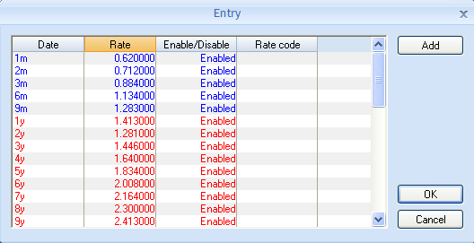

GetYieldCurve
函数功能说明
用户在UI界面输入不同的参数，最终计算得到校准后的收益率曲线图形与结果
前端交互说明
构建一般利率曲线
从Currency列表或从某些金融工具窗口的超链接中可以打开收益率曲线的图形界面。这个界面对于每个曲线模型都是相同的，尽管有些曲线模型可能有一些更专用的领域。

收益率曲线窗口的要素如下：
Market Point List允许您添加或修改构建收益率曲线的市场点。图形界面如下：

Real-time Parameters定义用于检索实时数据的参数。
Numerical Results显示收益率曲线的校准后的市场点结果。

yield curves窗口中图形的颜色区分：
-
收益率曲线以实线的形式显示，颜色如下:
- 红色：展示由短期利率和长期利率决定的曲线。
- 紫色：显示由远期利率决定的曲线。
-
定义收益率曲线的的市场点以下颜色显示：
- 黑色：展示短期利率和长期利率之间的插值。这只在曲线类型设置为单曲线时显示。
- 蓝色：展示被定义为短期期限（小于1年）的点。
- 红色：展示被定义为长期期限（大于1年）的点。
- 绿色：展示被定义为具有绝对到期日的期货的点。
-
点与点之间的曲线显示为虚线。
Market Curve Display按钮：可以分别显示短期利率和长期利率。这个图将短期曲线和长期曲线分开显示
Curve Identification定义了该收益率曲线的标识
- Code：曲线编码，由系统生成
- Name：曲线名称，由用户输入，必选
Curve Date显示曲线最新修改日期
Rate Definition定义了所使用金融工具报价的利率模板，选择范围为：对应Currency下的Interest Rate
- Short rate：定义所输入报价的短期（1年以下）金融工具利率模板，必选
- Long rate：定义所输入报价的长期（1年以上）金融工具利率模板，必选
- Future rate：定义所输入报价的特定期限（1-2年）金融工具利率模板，可选
利率模板的使用场景见利率模板匹配
Spread选定利差曲线参数。
- Type：定义利差类型，可选，可用选项如下：
- Zero Coupon Spread - 定义相对零息利率曲线的利差。
- Forward Spread - 定义相对远期利率曲线的利差。
- Spread Curve - 定义相对其它利率曲线的利差。
- Zero Coupon Spread Curve - 定义了一种结合了 Zero Coupon Spread和Spread Curve的利差类型：在选定的参考曲线上的零息票静态利差的期限结构。
- Fam.Ref：在Type字段上选择了Spread Curve选项时可用。定义利差曲线的参考曲线族。
- Spread：输入百分比形式的利差，可选。在Type字段上选择了Zero Coupon Spread 或 Forward Spread选项时可用。
Model用于选择收益率曲线所使用的数据和校准模型，以及指定部分曲线的业务域
-
模型列表详见模型列表
模型详细算法见yield curve model
-
Parametric Data：收益率曲线模型的额外参数。
Forward Rate用于选择展示远期利率曲线
-
Maturity：定义远期利率期限，可选。必须为相对期限，如3m或6m。
该期限的远期曲线会显示为绿色。
包含无效字符的输入将被更改为0。
-
Rate：定义远期利率，可选。该曲线显示为紫色。
这条曲线是动态生成的，用于显示曲线点，字段中的值不会保存在数据库中。
Zero Coupon用于选择曲线计息模式
- Mode定义计算收益率曲线的复利模式，必选。可用选项如下:
- Linear
- Actuarial
- Continuous
- Absolute
- Absolute/12
- YTM Semi-annually
- YTM Quarterly
- Habitual Yield
- YTM Daily(252)
- YTM Daily(365)
- YTM Annually
- Basis定义计算复利的日期计算基础，必选。可用选项如下:
- ACT/360
- ACT/365 FIXED
- ACT/ACT (ISDA)
- 30U/360
- 30E/360 ISDA00
- Actual/365.25
- ACT/ACT (ISMA) ISDA00
- NL/365
- ACT/ACT (AFB)
- 30/360 ISDA06
- 30E/360 ISDA06
- ACT/ACT (ISMA) ISDA06
- Open/252
- Open/Open
- ACT/365 (JGB)
- Eurobond
- SIA 30/360
- ACT/364 FIXED
Curve Type
- Status：定义处理曲线更新的方式，系统生成。可用选项如下:
- Live -启用来自实时服务器的更新。这是默认的曲线类型。更多信息请参见《DRT服务器安装指南》。
- Fixed-曲线不被实时服务器更新。此模式用于瞬间停止曲线移动，并帮助验证。
- Past-显示由User Date文本框定义的日期的曲线点。此状态用于修改过去的曲线值。
- User Date：系统生成。打开Past Date对话框，显示过去日期的曲线。只有在Status下拉框中选定Past时才启用。若要显示过去日期的曲线，请在 Past Date对话框中选择一个日期，然后单击Load按钮。Past Date对话框中显示的日期为定义了历史数据的日期。
Smoothing Between Segments：建议理解为市场点筛选规则，而非曲线平滑方法
-
Money-Market to Futures/FRAs：定义当两类市场点重叠时，选择哪一种金融工具，可选。可用选项如下:
- Money-Market - 选用 money-market points 而非 futures points
- Futures/FRAs - 选用 futures or forward rate agreement points 而非 money-market points
- Futures/FRAs with virtual MM - 选用futures or forward rate agreement points with virtual money-market
-
Futures/FRAs to Swaps：定义当两类市场点重叠时，选择哪一种金融工具，可选。可用选项如下:
-
Futures/FRAs - 选用 future or forward rate agreement points 而非 swap points
-
Swaps - 选用swap points 而非 future or forward rate agreement points
-
构建Bond Yield Curve
新建Bond Yield Curve的界面位于On-the-run Bond Yield Curve下，与一般收益率曲线界面不同，参数更为简单

Bond Yield Curve窗口由多个部分组成，这些部分定义了如何使用on-the-run bond 构建on-the-run bond yield curves。以下部分与Yield Curve窗口的部分相同：
- Curve Date
- Curve Identification
以下部分的参数是针对on-the-run bond yield curves的：
- YTM Conventions
- Spread
- Curve Type
- Model
Bond Yield Curve窗口中的以下按钮与Yield Curve窗口中的按钮相同:
- Details
- Scale
- RIC
- Save
Model：曲线模型，可选。可用选项为
- Standard
Interpoltion：插值方法，必选。可用选项为
- Flat (Nearest) - 缺失点指定为最近点
- Linear - 缺失点指定为线性插值点
Spread：应用于曲线上所有点的利差，可选。债券曲线的利差作为利率曲线的利差
YTM Conventions Section：
- Mode：计算曲线点YTM的复合模式，必选。这是针对短期项中的短期期限和长期项中的长期期限而定义的。
- Basis：日期计数规则，必选。这是针对短期项中的短期期限和长期项中的长期期限而定义的。
- On Adjusted Date：是否使用调整后的日期计算YTM，可选。
- On Settlement Date：是否使用结算日计算YTM，可选。
Market Point List允许您添加或修改构建收益率曲线的市场点。图形界面如下：
-
Bond Reference ：必选
-
Quotation Type ：债券报价类型，必选。可用选项如下：
- Clean %
- Dirty %
- Clean Amount
- Dirty Amount
- In Rate
- Last
-
Quotation：债券价格，必选。用于计算曲线点处的YTM
-
Enable/Disable：可选
Numerical Results：市场点的YTM校准结果
Fusion关于Quotation的类型识别，基于输入的Quotation数值的大小以及Quotation Type的选择。
参数表
入参表：
| 序号 | 入参 | 入参说明 | 类型 | 是否必须 | 数据来源 |
|---|---|---|---|---|---|
| 1 | entry_data | 四列：Date，Rate，Enable/Disable，Rate Code；分别代表期限，利率，是否选用，指定IR类型，记数据长度(N,4) | matrix | 是 | input |
| 2 | curve_identification_code | 该收益率曲线使用的货币类型 | str | 是 | input |
| 3 | short_rate | 短期利率模板，来自于InterestRate，定义1年以内数据点默认IR模板 | str | 是 | Input |
| 4 | long_rate | 长期利率模板，来自于InterestRate，定义1年以上数据点默认IR模板 | str | 是 | Input |
| 5 | model | 曲线模型，收益率曲线使用的数据和校准模型（插值模型）。Option=['Standard', 'CMS Spread', 'Cubic Spline', 'Forex Curve', 'Forex Point Curve', 'Global Cubic Spline', 'OIS Discount', 'rt-Linear', 'Flat Forward', 'Forex'] | str | 是 | Instrument |
| 6 | curve_name | 曲线名称 | str | 是 | Input |
| 7 | zero_coupon_mode | 收益率曲线的复利方式，option=['Linear', 'Actuarial', 'Continuous', 'Absolute', 'Absolute/12', 'YTM Semi-annually', 'YTM Quarterly', 'Habitual Yield', 'YTM Daily(252)', 'YTM Daily(365)', 'YTM Annually'] | str | 是 | Instrument |
| 8 | zero_coupon_basis | 复利日期规则，option=['ACT/360', 'ACT/365 FIXED', 'ACT/ACT(ISDA)', '30U/360', '30E/360', 'Actual/365.25', 'ACT/ACT(ISMA) ISDA00', 'NL/365', 'ACT/ACT(AFB)', '30/360 ISDA06', '30E/360 ISDA06', 'ACT/ACT(ISMa) ISDA06', 'Open/252', 'Open/Open', 'ACT/365(JGB)', 'Eurobond', 'SIA 30/360', 'ACT/364 FIXED'] | str | 是 | Instrument |
| 9 | future_rate | 期货利率模板，来自于InterestRate，定义1-2年数据点默认IR模板 | str | 否 | Input |
| 10 | spread_type | 利差类型。Option=['Zero Coupon Spread', 'Forward Spread', 'Spread Curve', 'Zero Coupon Spread Curve']。 | str | 否 | Input |
| 11 | fam_ref | 利差曲线的曲线族，曲线类型选定Spread Curve时可用 | str | 否 | Input |
| 12 | spread | 利差 | float | 否 | Input |
| 13 | parametric_data | 上面选的的校准模型model的具体参数 | matrix | 否 | Input |
| 14 | forward_rate_maturity | 远期利率成熟期，为相对期限。依靠远期利率报价而不是货币报价来获取短期点 | str | 否 | Input |
| 15 | forward_rate | 远期利率模板 | str | 否 | Input |
| 16 | smoothing_between_money_market_to_futures_fras | 当money-market和futures/FRAs点期限重叠时，选定哪类，option=['Money-Market', 'Futures/FRAs', 'Futures/FRAs with virtual MM'] | str | 否 | Instrument |
| 17 | smoothing_between_futures_fras_to_swaps | 当futures/FRAs和swap点期限重叠时，选定哪类，option=['Futures/FRAs', 'Swaps'] | str | 否 | Instrument |
出参表：
| 序号 | 出参 | 出参说明 | 类型 | 备注 |
|---|---|---|---|---|
| 1 | numerical_results | 校正后图形上的实际点 | matrix |
函数隶属类型
该函数隶属model，可应用于利率期限结构建模。